☕
Rasa yang Dekat
Pilihan menu kopi dan non-kopi yang cocok untuk menemani obrolan ringan sampai diskusi panjang.
Dari gerai kecil dengan rasa yang dekat di hati, Kopi Maknus hadir sebagai tempat singgah sederhana untuk menikmati kopi, berbagi cerita, dan merayakan momen kecil bersama teman-teman.
DariMaknusUntukKita
Open
16.00-01.00 WIB
Konsep
Street Coffee
Microcopy
Singgah sebentar, cerita lebih lama.

Dari satu cup, obrolan bisa mulai ke mana saja.
Tentang
Kopi Maknus adalah street coffee yang berdiri sejak 14 September 2024 dan sebelumnya dikenal dengan nama Kopi Tagak. Hadir dengan konsep sederhana, hangat, dan dekat dengan keseharian anak muda, Kopi Maknus menjadi tempat singgah untuk menikmati kopi, nongkrong santai, dan berbagi cerita setelah aktivitas panjang.
Didirikan oleh Muhammad Rizky Maulana, Kopi Maknus tumbuh dari semangat menghadirkan minuman yang mudah dijangkau, punya karakter, dan bisa dinikmati oleh siapa saja. Melalui tagline DariMaknusUntukKita, Kopi Maknus ingin menjadi bagian dari momen kecil yang terasa dekat, akrab, dan menyenangkan.
Tempatnya dibuat untuk suasana yang santai: mampir sebentar setelah kuliah, ngobrol setelah kerja, atau sekadar mencari minuman dingin di malam hari. Dengan pilihan kopi dan non-kopi yang variatif, Kopi Maknus ingin jadi pilihan dekat untuk anak muda, mahasiswa, pekerja, dan siapa saja yang butuh ruang kecil untuk rehat.
Highlight
Pilihan menu kopi dan non-kopi yang cocok untuk menemani obrolan ringan sampai diskusi panjang.
Pilihan reguler, tumbler, dan refill membuat pelanggan bisa menikmati minuman favorit dengan lebih hemat.
Buka dari sore sampai malam, pas untuk singgah setelah kuliah, kerja, atau jalan santai.
Konsep sederhana di ruang terbuka yang terasa santai, akrab, dan tidak kaku.
Katalog
Beberapa pilihan favorit buat mulai singgah. Dari kopi susu sampai yang segar tanpa kopi.
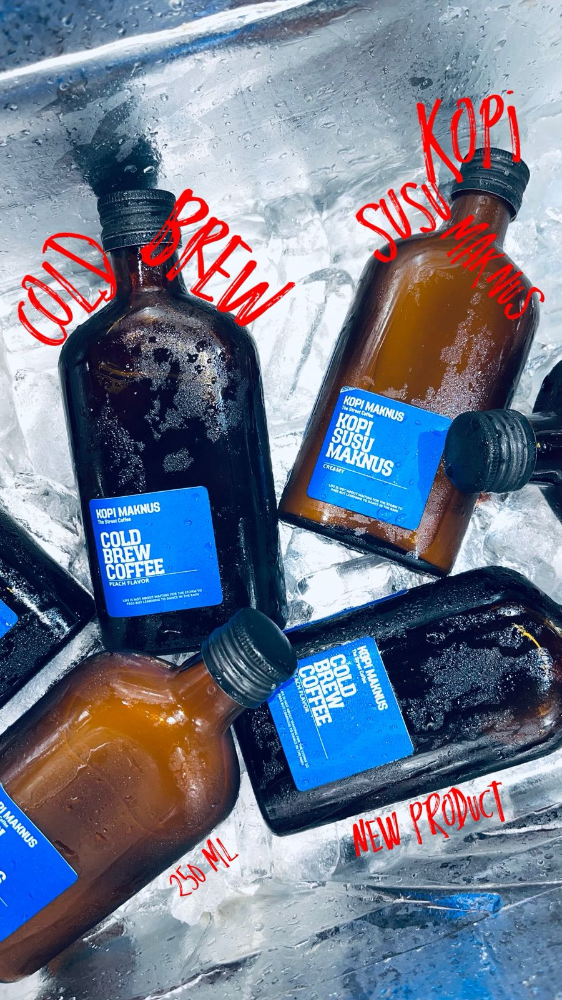
Kopi dingin botolan 250 ml yang praktis, smooth, dan cocok jadi stok teman aktivitas.
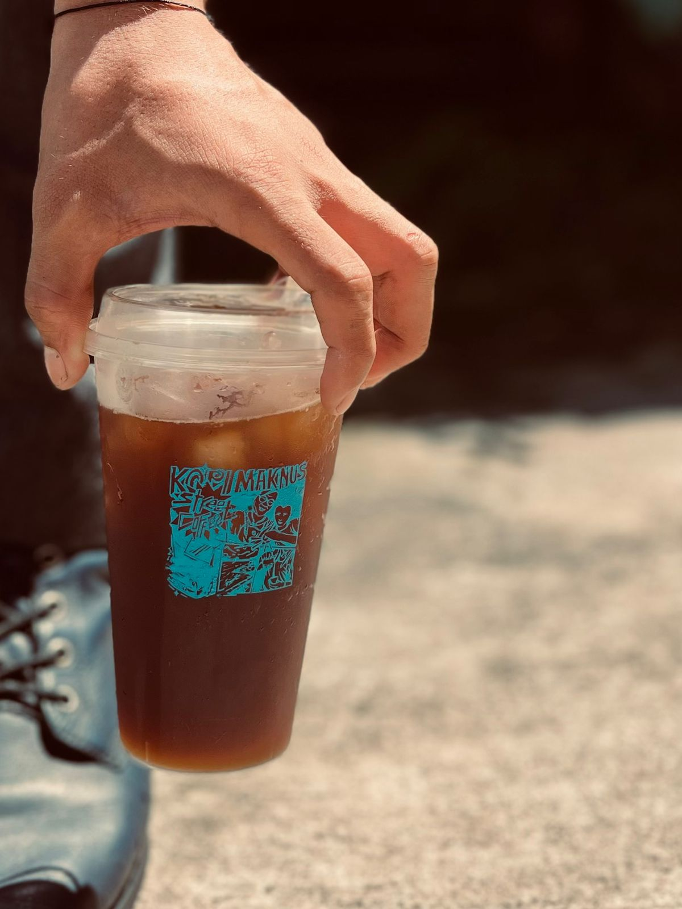
Pilihan kopi dingin yang ringan dan clean, pas untuk rasa kopi yang lebih tegas.
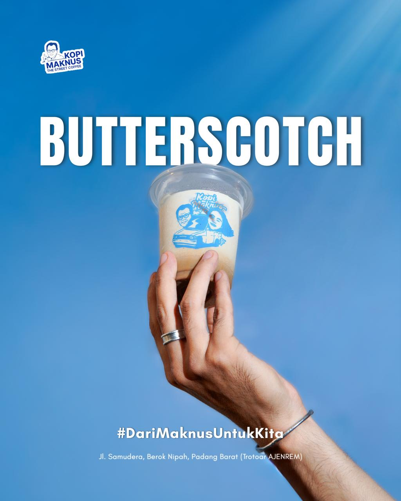
Kopi susu dengan aroma butterscotch yang lembut, creamy, dan manisnya pas.
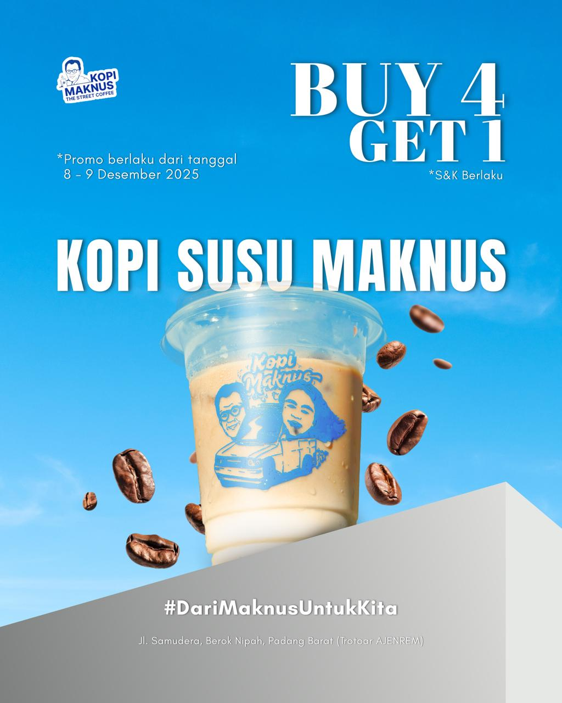
Menu signature yang sering jadi pilihan ramai-ramai untuk nongkrong bareng.
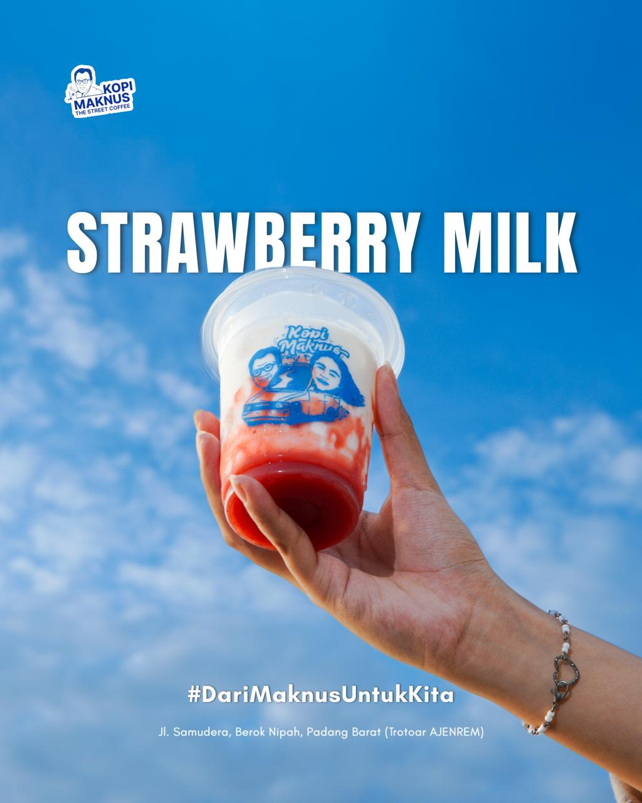
Pilihan segar tanpa kopi, manis ringan, dan cocok buat cuaca Padang.
Gallery
Dari Maknus untuk Kita. Tempat kecil, cerita panjang, dan malam yang terasa lebih hangat.
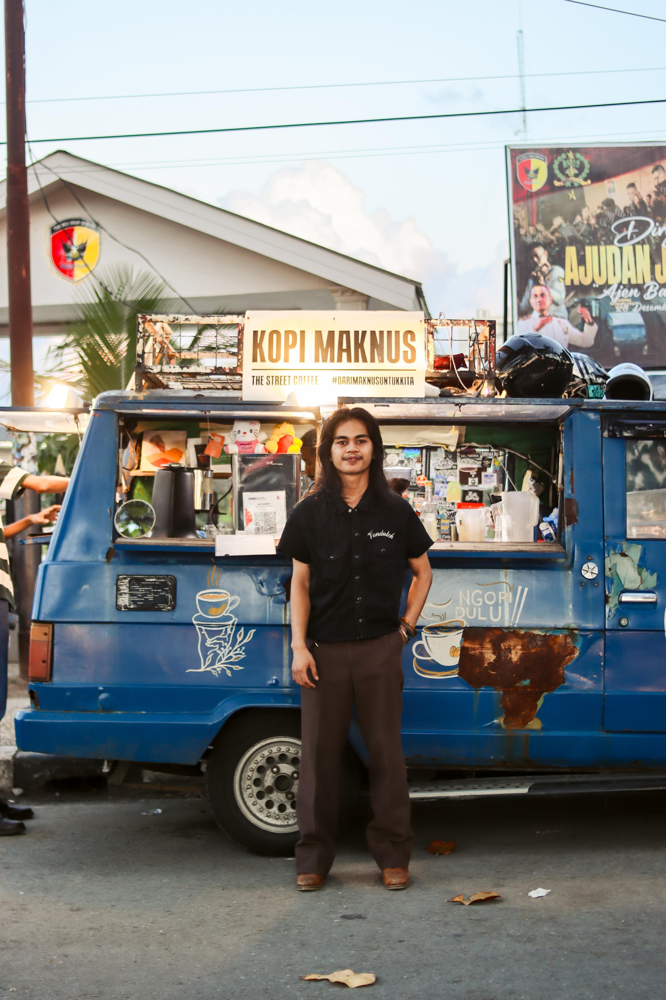
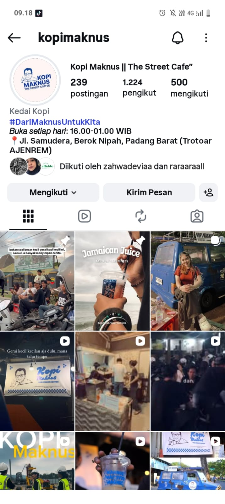
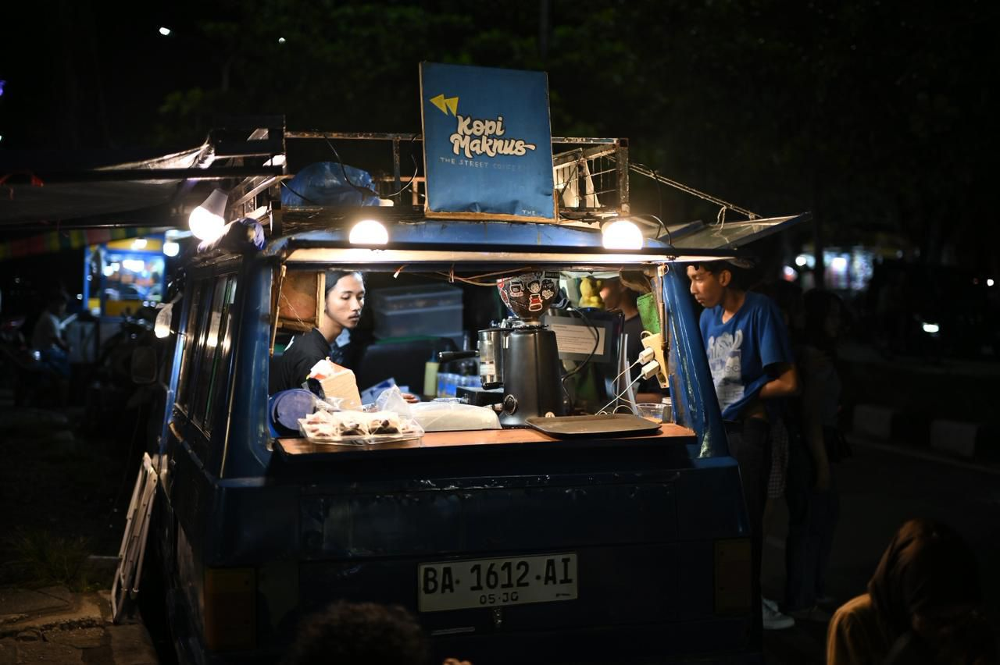
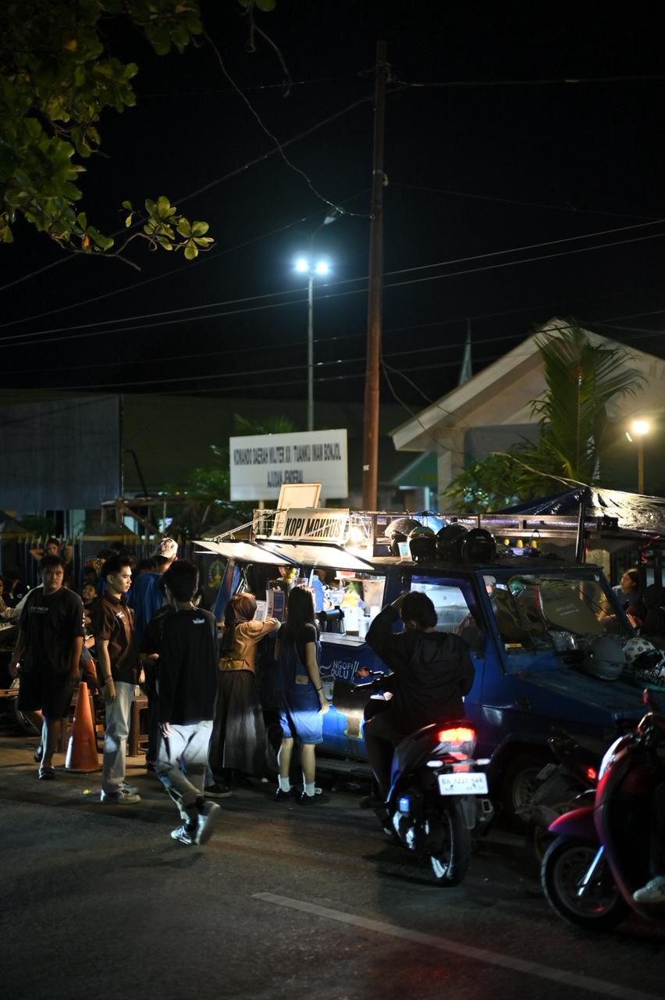
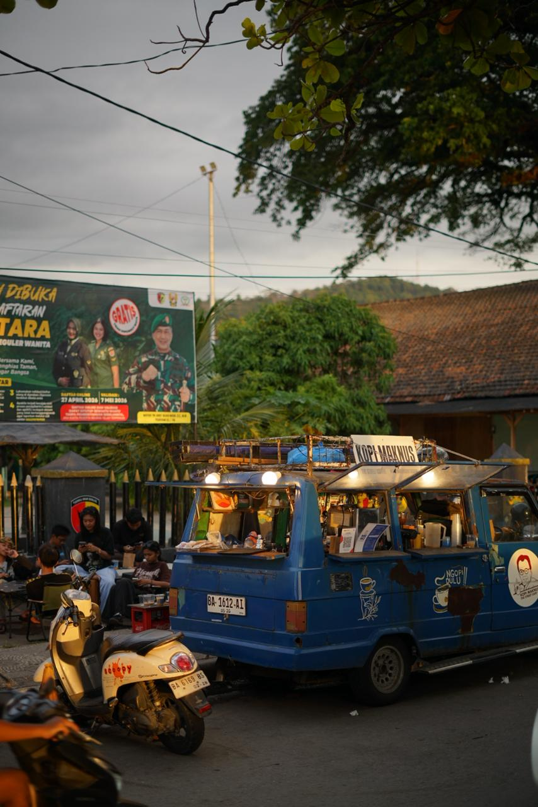
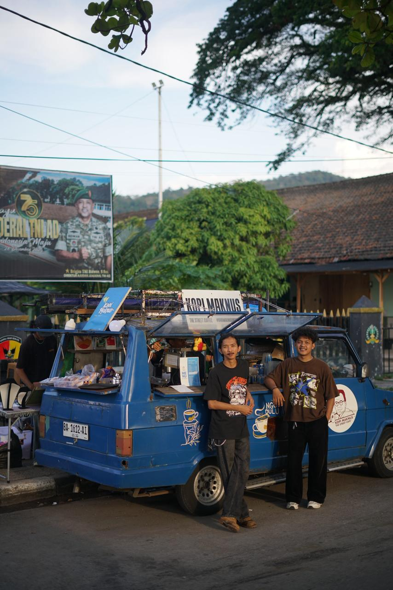
Lokasi
Jam buka
Setiap hari, 16.00-01.00 WIB
Alamat
Jl. Samudera, Berok Nipah, Padang Barat, Trotoar AJENREM
Kontak
Instagram @kopimaknus
Google Maps
Kopi Maknus - Trotoar AJENREM